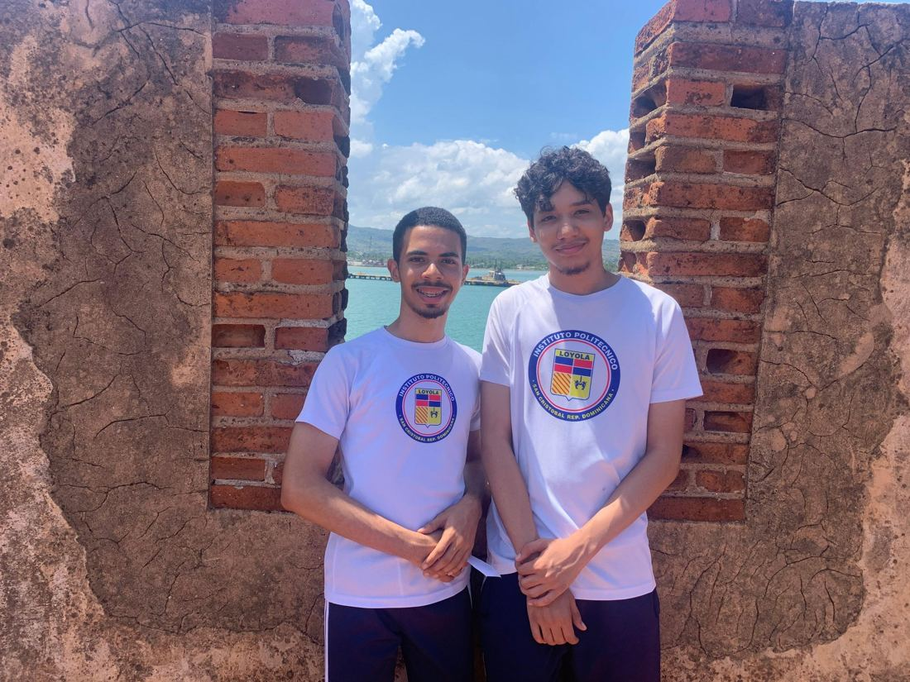

Mi reflexión personal
Realizar esta excursión fue una experiencia muy bonita, ya que tuve la oportunidad de conocer una parte de nuestro país que anteriormente no había visitado. Durante el recorrido pude apreciar nuevos paisajes, conocer lugares históricos y aprender sobre acontecimientos y personajes importantes de la República Dominicana.
Uno de los aspectos más importantes para mí fue conocer la historia de Gregorio Luperón, ya que antes de esta visita no tenía muchos conocimientos sobre quién era y cuáles fueron sus aportes a nuestro país. También me gustó conocer la Fortaleza de San Felipe y comprender la importancia que tuvo durante la época colonial.

En cuanto al recorrido, me llevé una buena impresión de Puerto Plata y de las zonas por las que pasamos. Me parecieron lugares muy bonitos, limpios y organizados. Sin embargo, considero que el viaje tuvo algunos aspectos que pudieron mejorar: pasamos demasiado tiempo trasladándonos en la guagua y haciendo paradas en diferentes paradores. Además, me hubiera gustado visitar más lugares y conocer otras zonas, especialmente Monte Cristi.
A pesar de esos detalles, fue una experiencia valiosa porque me permitió ampliar mis conocimientos sobre la historia y la geografía de mi país. Me llevo como enseñanza que debemos interesarnos más por conocer nuestro territorio, valorar nuestro patrimonio y reconocer la importancia de las personas que contribuyeron a construir nuestra historia.
Mis respuestas en resumen
Selecciona cada pregunta para ver mi respuesta.
1¿Qué fue lo más importante que aprendí?
Conocer el legado de Gregorio Luperón y la importancia del patrimonio histórico.
2¿Qué lugar tuvo mayor impacto en mí?
La Casa Museo General Gregorio Luperón, porque me permitió conocer a una figura histórica que anteriormente desconocía.
3¿Cómo se relaciona la excursión con lo aprendido en clase?
Mediante la historia colonial, la Guerra de la Restauración y el conocimiento geográfico del territorio dominicano.
4¿Qué cambió en mi forma de comprender el tema?
Comprendí que la historia puede conocerse de una manera más cercana cuando visitamos los lugares relacionados con ella.
5¿Por qué es importante valorar estos lugares?
Porque conservan nuestra memoria histórica y cultural.
6¿Qué enseñanza me llevo?
La importancia de conocer nuestro país y valorar su historia.